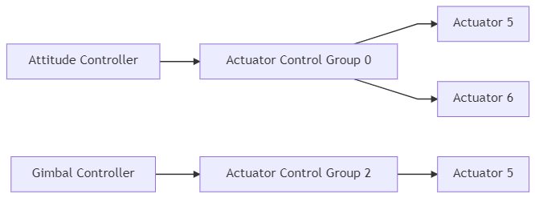
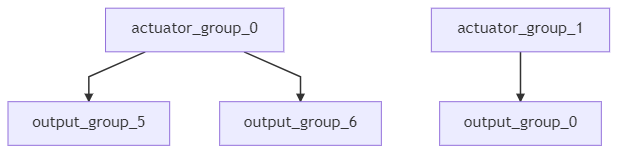

믹싱과 액추에이터
PX4 구조는 코어 컨트롤러에서 에어프레임 레이아웃이 특별한 케이스에 처리를 필요로 하지 않는 것을 보장합니다.
믹싱은 물리적 명령어 (예. turn right)를 받아들이고 그것을 모터 컨트롤이나 서보 컨트롤과 같은 액추에이터 명령어로 변환합니다. 에일러론당 하나의 서보를 가진 비행기의 경우 하나는 높게 다른 하나는 낮게 명령하는 것을 의미합니다. 멀티콥터에도 동일하게 적용됩니다. 앞으로 피칭하기 위해서는 모든 모터의 속도 변화가 필요합니다.
실제 자세 컨트롤러부터 믹서의 기능을 모듈화 시키는 것은 재사용성을 증가시킵니다.
파이프라인 컨트롤
특정 컨트롤러는 특정 정규화된 물리력이나 토크를 (-1..+1 로 스케일 됨) 믹서로 보내고, 그러면 각각의 액추에이터들이 설정됩니다. 출력 드라이버 (예. UART, UAVCAN 또는 PWM) 은 그것을 액추에이터의 기본 단위로 변환합니다 (예. 1300의 PWM 값).

제어 분류
PX4는 제어 분류 (입력) 과 출력 분류를 활용합니다. 개념은 아주 간단합니다: 예를 들어 핵심 비행체 제어 장치에 대한 제어 분류는 attitude, 탑재 분류는 gimbal 입니다. 출력 분류는 하나의 물리적인 버스입니다 (예. 서보의 첫 8개의 PWM 출력). 이들 각 분류는 믹서에 대응하여 스케일할 수 있는 8개의 정규화 (-1..+1) 명령 포트가 있습니다. 하나의 믹서는 어떻게 8개의 제어 신호 각각을 8개의 출력으로 연결할지 정의합니다.
간단한 비행기를 예로 들면, 컨트롤 0 (rolle) 은 곧바로 출력 0 (aileron) 에 연결됩니다. 멀티콥터는 조금 다릅니다. 제어 0번(좌우 회전각)은 4개의 모터에 모두 연결하고 스로틀과 결합합니다.
제어 분류 #0 (비행 제어)
- 0: 좌우 회전각 (-1..1)
- 1: 상하 회전각 (-1..1)
- 2: 방위 회전각 (-1..1)
- 3: 스로틀 (0..1 일반 범위, -1..1 다양한 상하 회전각 조절 장치 / 역추진 장치용)
- 4: 플랩 (-1..1)
- 5: 스포일러 (-1..1)
- 6: 에어 제동장치 (-1..1)
- 7: 랜딩 기어 (-1..1)
제어 분류 #1 (수직 이착륙 비행 제어/대체용)
- 0: 좌우 회전각 대체용 (-1..1)
- 1: 상하 회전각 대체용 (-1..1)
- 2: 방위 회전각 대체용 (-1..1)
- 3: 스로틀 대체용 (0..1 일반 범위, -1..1 다양한 상하 회전각 조절 장치 / 역추진 장치용 )
- 4: 예약 / aux0
- 5: 예약 / aux1
- 6: 예약 / aux2
- 7: 예약 / aux3
컨트롤 그룹 #2 (Gimbal)
- 0: 짐벌 좌우 회전각
- 1: 짐벌 상하 회전각
- 2: 짐벌 방위 회전각
- 3: 짐벌 셔터
- 4: 카메라 확대/축소
- 5: 예약
- 6: 예약
- 7: 예약 (패러슈트, -1..1)
제어 분류 #3 (수동 처리)
- 0: 원격 조종 좌우 회전각
- 1: 원격 조종 상하 회전각
- 2: 원격 조종 방위 회전각
- 3: 원격 조종 스로틀
- 4: 원격 조종 모드 전환 (RC_MAP_FLAPS에 매핑한 RC 채널 통과)
- 5: 원격 조종 AUX 1 (RC_MAP_AUX1에 매핑한 RC 채널 통과)
- 6: 원격 조종 AUX2 (RC_MAP_AUX2에 매핑한 RC 채널 통과)
- 7: 원격 조종 AUX3 (RC_MAP_AUX3에 매핑한 RC 채널 통과)
This group is only used to define mapping of RC inputs to specific outputs during normal operation (see quad_x.main.mix for an example of AUX2 being scaled in a mixer). 수동 입출력 이벤트 발생시 안전장치는 (PX4FMU 가 PX4IO 보드와의 통신을 멈췄을 때) 제어 그룹 0에 정의한 좌우/상하/방위 회전각 조절, 스로틀에 대한 매핑/믹싱만 활용합니다(다른 매핑은 무시).
Control Group #6 (First Payload)
- 0: function 0
- 1: function 1
- 2: function 2
- 3: function 3
- 4: function 4
- 5: function 5
- 6: function 6
- 7: function 7
가상 제어 분류
가상 제어 분류는 수직이착륙기 코드를 작성하려는 개발자와 관련된 부분입니다. 믹서에서 사용하면 안되며, "완벽성"을 목적으로만 제공합니다.
These groups are NOT mixer inputs, but serve as meta-channels to feed fixed wing and multicopter controller outputs into the VTOL governor module.
제어 분류 #4 (비행 제어 MC 가상)
- 0: 좌우 회전각 대체용 (-1..1)
- 1: 상하 회전각 대체용 (-1..1)
- 2: 방위 회전각 대체용 (-1..1)
- 3: 스로틀 대체용 (0..1 일반 범위, -1..1 다양한 상하 회전각 조절 장치 / 역추진 장치용 )
- 4: 예약 / aux0
- 5: 예약 / aux1
- 6: 예약 / aux2
- 7: 예약 / aux3
제어 분류 #5 (비행 제어 FW 가상)
- 0: 좌우 회전각 대체용 (-1..1)
- 1: 상하 회전각 대체용 (-1..1)
- 2: 방위 회전각 대체용 (-1..1)
- 3: 스로틀 대체용 (0..1 일반 범위, -1..1 다양한 상하 회전각 조절 장치 / 역추진 장치용 )
- 4: 예약 / aux0
- 5: 예약 / aux1
- 6: 예약 / aux2
- 7: 예약 / aux3
출력 그룹/매핑
An output group is one physical bus (e.g. FMU PWM outputs, IO PWM outputs, UAVCAN etc.) that has N (usually 8) normalized (-1..+1) command ports that can be mapped and scaled through the mixer.
The mixer file does not explicitly define the actual output group (physical bus) where the outputs are applied. Instead, the purpose of the mixer (e.g. to control MAIN or AUX outputs) is inferred from the mixer filename, and mapped to the appropriate physical bus in the system startup scripts (and in particular in rc.interface).
MAIN 출력에 활용하는 물리 버스가 항상 동일하지 않으므로 이런 접근 방법이 필요합니다. 비행체 제어 장치에 입출력 보드가 붙어(PX4 레퍼런스 비행체 제어 장치 설계 > 메인 입출력 기능 해부편을 참고)있거나 모터 제어 목적으로 UAVCAN 통신 수단을 활용하는지 여부에 따라 달려있습니다. 시작 스크립트에서는 "device" 추상 레이어를 활용하여 적절한 믹서 파일을 보드에 적당한 장치 드라이버로 불러옵니다. 메인 믹서는 UAVCAN을 활성화했을 경우
/dev/uavcan/esc(uavcan) 장치를 불러오며, 그렇지 않을 경우/dev/pwm_output0(이 장치는 입출력 보드 조종기의 입출력 드라이버를 대응하며, 보드의 FMU 드라이버는 이에 해당하지 않습니다) 조종 장치를 불러옵니다. AUX 믹서 파일은 입출력 보드를 내장한 픽스호크 컨트롤러의 FMU 드라이버에 대응하는/dev/pwm_output1장치에 불러옵니다.
Since there are multiple control groups (like flight controls, payload, etc.) and multiple output groups (busses), one control group can send commands to multiple output groups.

실제로 시작 스크립트는 단일 장치(출력 분류)에 믹서만 불러옵니다. 기술적인 제한이라기보단 그냥 설정입니다. 여러 드라이버에 메인 믹서를 불러올 수 있습니다. 예를 들면 메인 믹서를 통해 UAVCAN과 메인 핀에 동일한 신호를 줍니다.
PX4 믹서 정의
Mixers are defined in plain-text files using the syntax below.
Files for pre-defined airframes can be found in ROMFS/px4fmu_common/mixers. These can be used as a basis for customisation, or for general testing purposes.
Mixer File Names
A mixer file must be named XXXX.main.mix if it is responsible for the mixing of MAIN outputs or XXXX.aux.mix if it mixes AUX outputs.
Mixer Loading
The default set of mixer files (in PX4 firmware) are defined in px4fmu_common/init.d/airframes/. These can be overridden by mixer files with the same name in the SD card directory /etc/mixers/ (SD card mixer files are loaded by preference).
PX4 loads mixer files named XXXX.main.mix onto the MAIN outputs and YYYY.aux.mix onto the AUX outputs, where the prefixes depend on the airframe and airframe configuration. Commonly the MAIN and AUX outputs correspond to MAIN and AUX PWM outputs, but these may be loaded into a UAVCAN (or other) bus when that is enabled.
The MAIN mixer filename (prefix XXXX) is set in the airframe configuration using set MIXER XXXX (e.g. airframes/10015_tbs_discovery calls set MIXER quad_w to load the main mixer file quad_w.main.mix).
The AUX mixer filename (prefix YYYY above) depends on airframe settings and/or defaults:
MIXER_AUX는 분명하게 어떤 AUX 파일을 불러올 지 설정할 때 활용할 수 있습니다(예: 에어프레임 설정시set MIXER_AUX vtol_AAERT설정은vtol_AAERT.aux.mix파일을 불러옴).- Multicopter and Fixed-Wing airframes load pass.aux.mix by default (i.e if not set using
MIXER_AUX). > Tippass.aux.mix파일은 원격 조종 처리 믹서이며, 믹서에서는 4개의 사용자 지정 원격 조종 채널 값을 (RC_MAP_AUXx/RC_MAP_FLAPS 매개변수 활용) AUX 출력의 첫번째 출력 넷으로 전달합니다. - 수직 이착륙 프레임에
MIXER_AUX을 설정했을 경우 지정 AUX 파일을 불러오며, 그렇지 않을 경우MIXER에 지정한 값대로 파일을 불러옵니다. - 짐벌 조종간을 활용할 수 있(고 AUX에 출력 상태를 설정)는 프레임은 에어프레임별 MIXER_AUX 설정보다 우선 반영하며,
mount.aux.mix파일을 AUX 출력에 불러옵니다.
Mixer file loading is implemented in ROMFS/px4fmu_common/init.d/rc.interface.
Loading a Custom Mixer
PX4 loads appropriately named mixer files from the SD card directory /etc/mixers/, by preference, and then the version in Firmware.
To load a custom mixer, you should give it the same name as a "normal" mixer file (that is going to be loaded by your airframe) and put it in the etc/mixers directory on your flight controller's SD card.
Most commonly you will override/replace the AUX mixer file for your current airframe (which may be the RC passthrough mixer - pass.aux.mix). See above for more information on mixer loading.
실행 시간에 mixer load 명령으로 믹서를 직접 불러올 수도 있습니다(다시 부팅하는 상황을 피함). 예를 들면, MAIN PWM 출력의 /etc/mixers/test_mixer.mix 믹서 파일을 불러오려면, 콘솔에서 다음 명령을 입력합니다:
mixer load /dev/pwm_output0 /fs/microsd/etc/mixers/test_mixer.mix
Syntax
Mixer files are text files that define one or more mixer definitions: mappings between one or more inputs and one or more outputs.
There are four types of mixers definitions: multirotor mixer, helicopter mixer, summing mixer, and null mixer.
- 멀티로터 믹서 - + 방향 또는 X축 방향의 4, 6, 8 회전 객체 출력을 가진 기체를 정의
- 헬리콥터 믹서 - 경사판 서보와 메인 모터 ESC 출력을 지닌 기체를 정의(후미익은 별도의 결합 믹서임.)
- 결합 믹서 - 0개 이상의 제어 입력을 단일 액츄에이터 출력으로 결합합니다. 입력은 비례 조정하며, 출력 계수를 반영하기 전에 믹싱 함수에서 결합합니다.
- 널 믹서 - 0을 출력하는 단일 액츄에이터 출력을 만듭니다(안전장치 모드가 아닐 때).
멀티로터와 헬리콥터 믹서는 각 형식에 맞게 사용하십시오. 결합 믹서는 서보와 액츄에이터 제어에 해당하며, 널 믹서는 일반 사용시 0값을 출력해야 하는 경우의 출력을 만들 때 활용합니다(예: 낙하산은 보통 0 값을 주지만, 안전장치 가동시 해당 값을 부여합니다). 수직 이착륙 믹서는 다른 믹서 형식을 혼합합니다.
The number of outputs generated by each mixer depends on the mixer type and configuration. For example, the multirotor mixer generates 4, 6, or 8 outputs depending on the geometry, while a summing mixer or null mixer generate just one output.
You can specify more than one mixer in each file. The output order (allocation of mixers to actuators) is specific to the device reading the mixer definition; for a PWM device the output order matches the order of declaration. For example, if you define a multi-rotor mixer for a quad geometry, followed by a null mixer, followed by two summing mixers then this would allocate the first 4 outputs to the quad, an "empty" output, and the next two outputs.
Each mixer definition begin with a line of the form:
<tag>: <mixer arguments>
The tag selects the mixer type (see links for detail on each type):
Some mixers definitions consist of a number of tags (e.g. O and S) that follow the mixer-type tag above.
단일 대문자로 시작하지 않은 일부 행은 무시합니다(따라서 설명문을 정의 행과 자유롭게 섞어쓸 수 있습니다).
Summing Mixer
Summing mixers are used for actuator and servo control.
A summing (simple) mixer combines zero or more control inputs into a single actuator output. Inputs are scaled, and the mixing function sums the result before applying an output scaler.
A simple mixer definition begins with:
M: <control count>
O: <-ve scale> <+ve scale> <offset> <lower limit> <upper limit>
If <control count> is zero, the sum is effectively zero and the mixer will output a fixed value that is <offset> constrained by <lower limit> and <upper limit>.
The second line defines the output scaler with scaler parameters as discussed above. Whilst the calculations are performed as floating-point operations, the values stored in the definition file are scaled by a factor of 10000; i.e. an offset of -0.5 is encoded as -5000.
The definition continues with <control count> entries describing the control inputs and their scaling, in the form:
S: <group> <index> <-ve scale> <+ve scale> <offset> <lower limit> <upper limit>
S:행은O:행 아래에 있어야합니다.
The <group> value identifies the control group from which the scaler will read, and the <index> value an offset within that group. These values are specific to the device reading the mixer definition.
When used to mix vehicle controls, mixer group zero is the vehicle attitude control group, and index values zero through three are normally roll, pitch, yaw and thrust respectively.
The remaining fields on the line configure the control scaler with parameters as discussed above. Whilst the calculations are performed as floating-point operations, the values stored in the definition file are scaled by a factor of 10000; i.e. an offset of -0.5 is encoded as -5000.
An example of a typical mixer file is explained here.
Null Mixer
A null mixer consumes no controls and generates a single actuator output with a value that is always zero.
Typically a null mixer is used as a placeholder in a collection of mixers in order to achieve a specific pattern of actuator outputs. It may also be used to control the value of an output used for a failsafe device (the output is 0 in normal use; during failsafe the mixer is ignored and a failsafe value is used instead).
The null mixer definition has the form:
Z:
Multirotor Mixer
The multirotor mixer combines four control inputs (roll, pitch, yaw, thrust) into a set of actuator outputs intended to drive motor speed controllers.
The mixer definition is a single line of the form:
R: <geometry> <roll scale> <pitch scale> <yaw scale> <idlespeed>
The supported geometries include:
- 4x - 쿼드로터의 X 설정
- 4+ - 쿼드로터의 + 설정
- 6x - 헥사콥터의 X 설정
- 6+ - 헥사콥터의 + 설정
- 8x - 옥토콥터의 X 설정
- 8+ - 옥토콥터의 + 설정
Each of the roll, pitch and yaw scale values determine scaling of the roll, pitch and yaw controls relative to the thrust control. Whilst the calculations are performed as floating-point operations, the values stored in the definition file are scaled by a factor of 10000; i.e. an factor of 0.5 is encoded as 5000.
Roll, pitch and yaw inputs are expected to range from -1.0 to 1.0, whilst the thrust input ranges from 0.0 to 1.0. Output for each actuator is in the range -1.0 to 1.0.
Idlespeed can range from 0.0 to 1.0. Idlespeed is relative to the maximum speed of motors and it is the speed at which the motors are commanded to rotate when all control inputs are zero.
In the case where an actuator saturates, all actuator values are rescaled so that the saturating actuator is limited to 1.0.
Helicopter Mixer
The helicopter mixer combines three control inputs (roll, pitch, thrust) into four outputs (swash-plate servos and main motor ESC setting). The first output of the helicopter mixer is the throttle setting for the main motor. The subsequent outputs are the swash-plate servos. The tail-rotor can be controlled by adding a simple mixer.
The thrust control input is used for both the main motor setting as well as the collective pitch for the swash-plate. It uses a throttle-curve and a pitch-curve, both consisting of five points.
스로틀 출력 변화 곡선과 상하 회전각 변화 곡선은 포지션에 대응하여 스로틀 값과 상하 회전각 값(제각각 별도로)이 위치한 "추력" 스틱 입력에 대응합니다. 이 설정 방식으로 제각기 다른 비행체 형식을 지닌 비행체의 각 부분의 특징을 조정할 수 있습니다. 커브 조정 방법 설명은 이 안내서에 있습니다 (프로그램 구성 가능한 스로틀 출력 변화 곡선과 프로그램 구성 가능한 상하 회전각 변화 곡선에서 찾아보십시오).
The mixer definition begins with:
H: <number of swash-plate servos, either 3 or 4>
T: <throttle setting at thrust: 0%> <25%> <50%> <75%> <100%>
P: <collective pitch at thrust: 0%> <25%> <50%> <75%> <100%>
T: defines the points for the throttle-curve. P: defines the points for the pitch-curve. Both curves contain five points in the range between 0 and 10000. For simple linear behavior, the five values for a curve should be 0 2500 5000 7500 10000.
This is followed by lines for each of the swash-plate servos (either 3 or 4) in the following form:
S: <angle> <arm length> <scale> <offset> <lower limit> <upper limit>
The <angle> is in degrees, with 0 degrees being in the direction of the nose. Viewed from above, a positive angle is clock-wise. The <arm length> is a normalized length with 10000 being equal to 1. If all servo-arms are the same length, the values should al be 10000. A bigger arm length reduces the amount of servo deflection and a shorter arm will increase the servo deflection.
The servo output is scaled by <scale> / 10000. After the scaling, the <offset> is applied, which should be between -10000 and +10000. The <lower limit> and <upper limit> should be -10000 and +10000 for full servo range.
The tail rotor can be controller by adding a summing mixer:
M: 1
S: 0 2 10000 10000 0 -10000 10000
By doing so, the tail rotor setting is directly mapped to the yaw command. This works for both servo-controlled tail-rotors, as well as for tail rotors with a dedicated motor.
The blade 130 helicopter mixer can be viewed as an example.
H: 3
T: 0 3000 6000 8000 10000
P: 500 1500 2500 3500 4500
# Swash plate servos:
S: 0 10000 10000 0 -8000 8000
S: 140 13054 10000 0 -8000 8000
S: 220 13054 10000 0 -8000 8000
# Tail servo:
M: 1
S: 0 2 10000 10000 0 -10000 10000
- 스로틀-커브는 50%의 추력에 6000 (0.6) 값에 도달하는 약간 가파른 경사로 시작합니다.
- 덜 가파른 경사로 계속 진행하며 100% 추력으로 10000 (1.0) 에 도달합니다.
- 상하 회전각 커브는 선형이지만, 전체 범위를 다 사용하지는 않습니다.
- 0% 스로틀 출력시, 상하 회전각 보정 설정은 거의 500 (0.05) 입니다.
- 최대 스로틀 출력시, 상하 회전각 보정 설정은 4500 (0.45) 밖에 안됩니다.
- 이 헬리콥터 형식에 더 큰 값을 사용하면 날개의 기능을 상실합니다.
- 이 헬리콥터의 경사판 서보는 0, 140에 220도 기울기를 가집니다.
- 서보 암 길이는 동일하지 않습니다.
- 두번째 세번째 서보는 긴 암을 가지나 처음 서보에 비해 1.3054배의 길이를 지닙니다.
- 서보 출력은 기계적 제약사항이 있어 -8000에서 8000 까지로 제한합니다.
VTOL Mixer
VTOL systems use a multirotor mixer for the multirotor outputs, and summing mixers for the fixed-wing actuators (and the tilting servos in case of a tiltrotor VTOL).
The mixer system for a VTOL vehicle can be either combined into a single mixer, where all the actuators are connected to either the IO or the FMU port, or split into separate mixer files for IO and for AUX. If separated, we recommend that all the multicopter motors are on one port, and all the servos and the fixed-wing motor on the other.
FMU 출력은 PX4 v1.11 부터 시작하는 멀티로터 모터에 활용할 수 있습니다. FMU 출력을 활용하려면 VT_MC_ON_FMU=1 값을 설정하십시오(그렇지 않으면 고정익 비행 모드일 때 끌 수 없습니다).